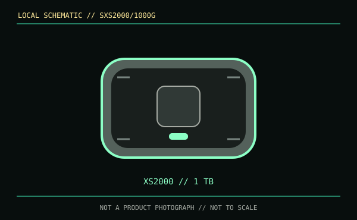

[ REMOVABLE MEDIA // MODEL-SPECIFIC RECORD ]
Kingston XS2000 1 TB (SXS2000/1000G)
A finished external SSD at the exact Kingston SXS2000/1000G configuration. This record does not describe an internal module or the detachable rugged sleeve as a separate drive.

IDENTIFICATION: Confirm both XS2000 family name and SXS2000/1000G SKU; capacity and bundled accessory sets vary by package and region.
Format, capacity and compatibility
| Product / part ID | Kingston XS2000 portable SSD, 1 TB, SXS2000/1000G |
|---|---|
| Interface | USB 3.2 Gen 2x2 (20 Gb/s), USB Type-C; backward-compatible modes depend on the host's supported USB link rate. |
| Performance | Manufacturer maximum sequential read and write speeds are up to 2,000 MB/s each. Peak values require a Gen 2x2 host and suitable cable, and are not a sustained-write or workload guarantee. |
| NAND / endurance | The cited consumer product page does not state NAND type or TBW endurance for the SKU. No NAND generation, controller, or write-life value is inferred. |
| Compatibility | USB-C data host required; confirm the operating system and filesystem can mount the prepared volume. The USB-C physical plug does not guarantee the 20 Gb/s Gen 2x2 mode or peak transfer speed. |
| Enclosure / SKU caveat | The removable rubber sleeve is a protective accessory, not a separate enclosure SKU. Impact/splash protection is limited and does not guarantee data survival. |
Handling and preservation
Protect the connector from dust and strain, eject safely and avoid heat during extended writes. Keep the original package/label and make checksummed copies to independent media. SSDs can fail suddenly and unpowered flash retention varies with use and environment; retain more than one verified copy.
Sources and standards
- Kingston — XS2000 portable SSD product specificationsManufacturer family page with capacities and interface/performance information.
- Kingston — XS2000 product support and technical resourcesManufacturer support and technical resources for the XS2000 family.
- USB-IF — USB 3.2 specifications overviewReference for USB 3.2 link generations.